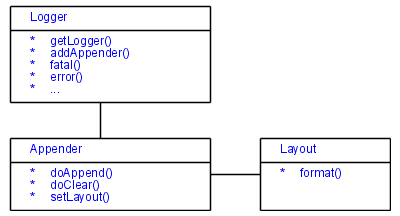

Log4js - The Logging Framework for JavaScript
Overview
Log4js is a logging framework for JavaScript. The main goal is to have a robust and solid logging API which is very simmilar to the Java logging framework Log4j.
Severals ways to log
The current available Appenders are:
- WindowAppender: open a new window in the browser and insert log messages in real time.
- WindowsEventAppender: send log messages in the MS Windows event manager.
- FileAppender: write log messages in a local file on the client.
- AjaxAppender: allow to send log messages to the server
with asynchronous HTTP request. There you can process
the logging events like you want on server side
(ASP.NET, Java Servlet, JSP, PHP, Ruby, etc.).
There is also a servlet for receiving these events tolog by Log4j or Java logging in the download section. - MetatagAppender: add log messages as meta data.
Many Appender can be used in same time.
Usage
Log4js is a simple API, which could be included in your scripts:
<script src="log4js.js" type="text/javascript"></script>
<script type="text/javascript">
<!-- //
//initialize the logger with your category
var logger = Log4js.getLogger("ajaxTest");
//set the level of logging
logger.setLevel(Log4js.Level.ALL);
//set the Appender to write the log to
logger.addAppender(new AjaxAppender("./log4j.jsp"));
// --> </script>
Now you can call the log in your logic like follow line:
<input type="button" name="trace" value="Trace"
onclick="logger.trace('I was traced!');return false;" />
For more details have a look at the users guide.
Browser Compatibility
Log4js is compatible with almost all current browsers. Some browser could not be tested because of missing hardware (e.g. Mac).
| Browser | Version | Platform | Compatibility | Note |
|---|---|---|---|---|
| KDE Konqueror | 3.5.2 | Linux KDE | full compatible | Some Appenders are browser specific and do not work on Konqueror. |
| Microsoft Internet Explorer | 5, 6, 7 | Windows | full compatible | Some Appenders are browser specific and do not work on IE. Some Appenders are IE specific. |
| Mozilla FireFox | 1, 2, 3 | Windows | full compatible | Some Appenders are browser specific and do not work on FireFox. |
| Mozilla FireFox | 1 | Linux | full compatible | Some Appenders are browser specific and do not work on FireFox. |
| Opera | 8, 9 | Windows | full compatible | Some Appenders are browser specific and do not work on Opera. |
| Safari | ? | Mac OS | open | Currently no platform available for testing. |
Architecture
The architecture is very close to log4j's architecture. There are only three main objects:
- The static Logger,
- an Appender and
- a specific Layout.
Appenders and Layouts are exchangeable and have only to fullfill the interfaces.

Conclusion
There are other libraries in order to reach this goal. We are discussing with the authors of other logging APIs in order to gather their efforts and provide a common framework - if possible.
Log4js is very simple to install and use.
by Stephan Strittmatter